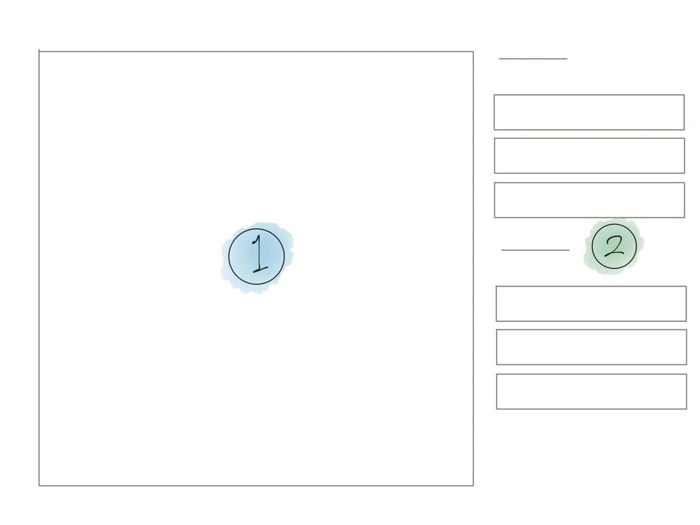

화면은 다음과 같이 구성됩니다.
왼쪽에 원래 수강신청 페이지(1)가, 오른쪽에 로그인/수강신청 조작 인터페이스(2)가 있습니다. (2)를 통해 수강신청 서버에 요청을 보내면 그 결과가 (1)에 표시됩니다.
대부분의 작업(로그인과 수강신청)은 (2)를 사용하여 수행할 수 있습니다. (1) 내부의 링크를 클릭하면 수강신청 사이트(sugang.inu.ac.kr)로 이동합니다.
이 클라이언트는 기존의 수강신청 환경을 개선하기 위해 작성되었습니다. 공개된 API를 사용하며, NetFunnel 대기 큐를 우회하여 작동합니다.
모든 요청은 사용자의 기기에서 발생하여 교내 수강신청 서버로 직접 전달되며, 기기의 퍼포먼스와 네트워크 환경에 의해 영향을 받을 수 있습니다.
로그인과 수강신청 요청은 기존의 수강신청 사이트와 마찬가지로 실패할 수 있습니다. 겉으로 보이는 부분만 다를 뿐 기존 수강신청 사이트에서와 동일한 요청을 보내기 때문에 항상 실패에 대비해야 합니다.
이 클라이언트는 수강신청의 성공을 보장하지 않습니다. 모든 책임은 사용자에게 있습니다. 파괴적/불법적 사용은 금지됩니다.